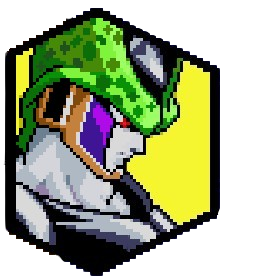
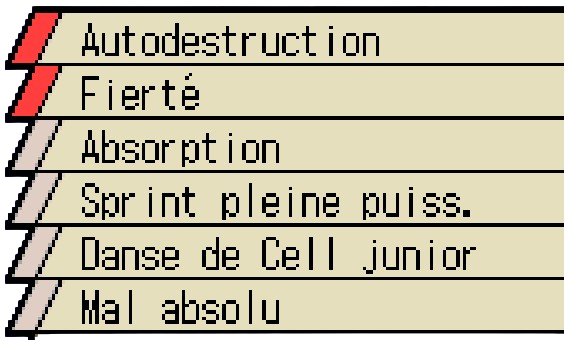
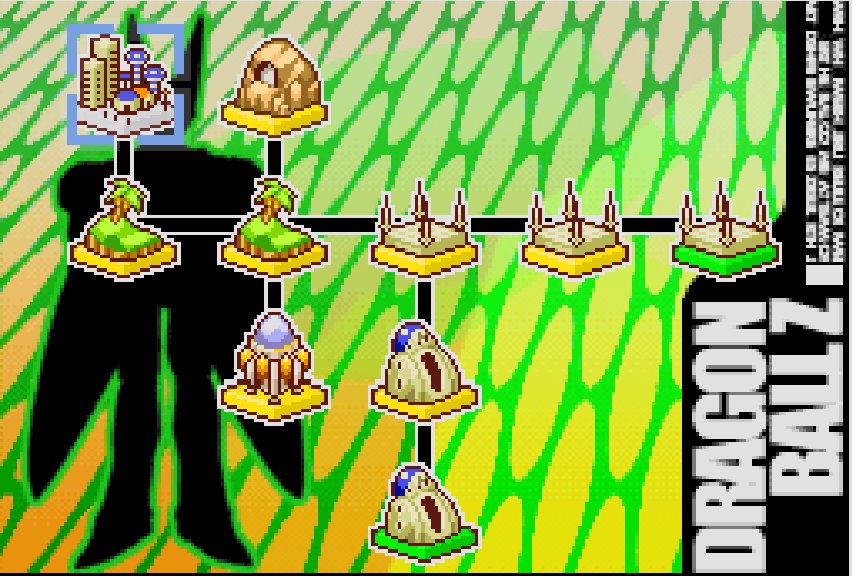
Après la mort du Dr Gero, l'ordinateur, qui est resté actif, continuait de travailler sur la création de l'être ultime, nommé Cell. Celui-ci n'a qu'un seul but après sa création: évoluer pour devenir parfait. Pour cela l'ordinateur lui indique qu'il doit absorber les cyborgs C-17 et C-18. Dés son réveil, Cell partit à leur recherche, mais en vain ils ont déja été détruits par Trunks supposément. Cell le retrouva, le tua et s'empara de sa machine à voyager dans le temps afin de rvenir au moment où les cyborgs étaient encore fonctionnels, afin de les absorber. En arrivant dans le passé, Cell fit la rencontre de Piccolo, qui avait ressenti son aura, qui au passage possède en lui l'aura de Goku, Vegeta, Piccolo, Freezer et son père le Roi Cold, vu qu'il possède les cellules de ces 5 individus. Lorsque Piccolo ressentir cette énergie, ce fut comme ci ceux dont ils tenaient les gènes, étaient regroupés au même endroit en même temps. Le cyborg se présenta à Piccolo et s'en suit une discussion tendue pour savoir d'où venait Cell et ce qu'il voulait, mais Cell voulant absorber Piccolo afin d'augmenter sa puissance décida de directement passer à l'attaque. Alors que les deux se rendaient coup pour coup, Piccolo avoue à Cell, qu'il le faisait juste parler, au final Trunks et Krilin arrivent et Cell a dut prendre la fuite.
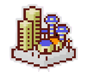
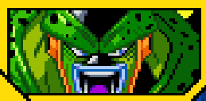

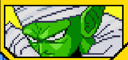
Après avoir prit la fuite, Cell commença à absorber une multitude d'humains afin de se renforcer pour pouvoir contrer les cyborgs et Piccolo. Un jour il ressentit le tumulte du combat entre C-17 et Piccolo, sans hésiter il fonça vers le lieu de l'affrontement pour tenter sa chance d'absorber les cyborgs. Grâce à son surcroit d'énergie, il met à mal Piccolo sans difficulté. C-17 qui reste confiant sur sa puissance, décide de l'affronter, mais Piccolo se joint à lui, essayant d'éviter la catastrophe que serait Cell après l'absorption de C-17. Malheureusement Cell absorba C-17 et devint encore plus puissant, sa prochaine cible est C-18.
Débloque l'Attaque Ultime "Absorption".

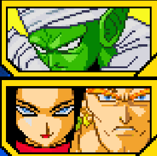
Maintenant qu'il a absorbé C-17 et mit hors service C-16, il se dirige vers sa prochaine cible : C-18. Mais Vegeta et Trunks, fraichement sortis de la Salle de l'Esprit et du Temps arrivent et décident d'affronter Cell. Vegeta affronte Cell en premier et le malmène, mais Cell décide de négocier à Vegeta sa forme parfaite, en échange d'un beau combat, le prince des Saiyans accepte et aide Cell à avoir sa forme parfaite, frâce à ça, il put absorber C-18 et devenir parfait. Désormais parfait, Cell décide d'affronter Vegeta qui reste sur ses positions et part affronter le cyborg ultime. Après un échec face à Cell, Vegeta tente le tout pour le temps avec un Final Flash qui réduit à néant une partie de Cell, croyant l'avoir grievement blessé, il se mit à rire, lais ce n'était qu'un test de Cell pour voir où sa régénération pouvait aller. Ensuite il étala Vegeta au sol sans plus attendre, voyant Trunks essayait de faire quelque chose il mit terme au combat et lui demanda comment ils sont devenus aussi fort, après avoir eu sa réponse, il décida d'organiser un tournoi pour savoir qui est le plus fort de la Terre, sinon quoi il fera régner la terreur sur Terre.
Débloque Cell (Parfait) comme personnage jouable

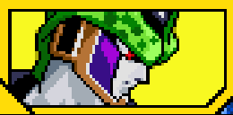

Cell retourne dans le labo où il a vu le jour, pendant ce temps Trunks et Krilin qui essayent de rassembler les données de Cell et ils y trouvent le Cell de cette époque qui n'est pas encore complet. Au moment où ils allaient le détruire, Cell apparaît et empêche sa destruction, en envoyant un Cell miniature et bleu: Cell Junior . Ce dernier détruit les deux guerriers sans grosses difficultés.
Débloque Cell Junior comme personnage de support.
Débloque l'attaque combinée avec Cell Junior "Danse de Cell Junior"

Battre Trunks avant Vegeta .
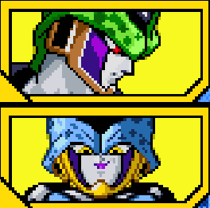
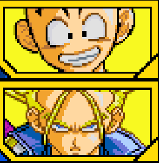
Alors que Vegeta se fait battre à plate couture par Cell, Trunks intervient mais se fait également mettre à l'amende par le cyborg, soudainement une capsule tomba des vetêments de Trunks, elle contenait la machine temporelle, Cell la récupéra et compte l'utiliser plus tard. Lors de son tournoi, il fut déçu du peu de résistance présente contre lui, il décida d'utilisa la machine temporelle de Trunks pour voyager dans le temps pour se rencontrer lui même et s'affronter. Quand il arriva, il vit un autre Cell Parfait et après une brève discussion, le combat commença entre les deux Cell. Après tout ça, Cell bien content d'avoir affronté sa version future de soi-même décida de continuer sa route.
Débloque l'Attaque Ultime "Sprint pleine puissance".
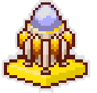
Battre Vegeta avant Trunks .

10 jours plus tard le tournoi de Cell commence et avec le combat le plus important que la Terre n'est jamais portée. Le premier combat commence avec Son Goku qui décide de commencer. Le combat était d'une intensité telle que personne autour ne parlait, mais Cell remporta le combat sur un abandon de Goku. Cell ne sachant pas l'identité du guerrier, déclare que s'il n'y a pas de guerrier assez fort pour le divertir, l'humanité sera réduite à néant, mais le saiyan lui répond qu'il n'est pas seul et qu'il y a un guerrier plus fort que lui.

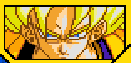
Après s'être incliné devant Cell, Goku abandonna son combat. Entouré d'une aura de colère, Cell détruisit Goku et ses amis, avec un Kamehameha gigantesque. Voyant qu'il n'y a plus d'adversaire, Cell était dégouté, mais soudainement une voix mystérieuse prononça une incantation et Cell apparut dans un mystérieux vaisseau, c'était le vaisseau de Babidi. Cell fit la rencontre de Dabra qui lui explique qu'il semble vouloir affronter des guerriers puissants, donc ils l'ont ramené pour se mesurer à des adversaires dont un certain invité spécial. Il s'agit de Freezer en personne, qui visiblement semble rester muet. Cell n'est pas surpris car il connaît la réputation de Cell et de Dabra, mais dans tous les cas il accepte le combat contre eux. Le combat pour savoir qui est le plus fort commence.
Débloque l'attaque combinée avec Freezer "Mal Absolu"
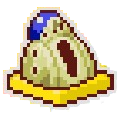
Battre Goku en lui infligeant un Ultimate Ko.
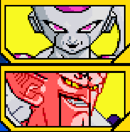
Furieux de voir que depuis que le monde était en paix, il s'était laissé aller, Vegeta décide de s'entraîner pour reprendre sa force d'antan. Quand il se sentit prêt, il alla chez Goku pour lui proposer un combat, Goku lui fit remarquer qu'après si peu de temps son énergie est incroyable, Vegeta répond en disant qu'il s'était juste reposé, dés lors un grand combat se lança entre les deux rivaux. Après ce combat, Vegeta retrouva le joie du combat en fit de même avec son fils Trunks.
Débloque la compétence "Conscience rivale".
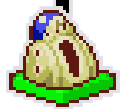
Terminer le combat contre C-18.
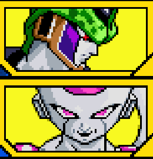
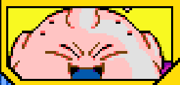
Le guerrier choisi par Goku, à la grande surprise générale est Gohan, son fils. Cell surpris du choix de Goku pense que c'est une blague, mais Goku lui donne même un senzu en lui disant qu'autrement il ne suivra pas, les autres Z Warriors abasourdis par le geste de Goku ne comprennent plus rien. Gohan arrive sur l'arène et les deux combattants se regardent, Cell compte affronter de face Gohan voyant que Goku semble ne pas plaisanter. Cell détruisit Gohan sans pitié, il regarda Goku et lui ordonna de revenir et d'arrêter cette blague, mais Goku lui dit de regarder derrière et là Gohan revient, prêt à se battre, mais en Super Saiyan 2. Cell choqué, ne sait plus quoi dire face au regard meurtrier de Gohan.
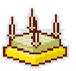
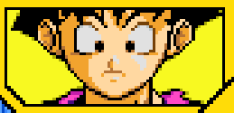
Alors que le face à face entre Gohan et Cell poursuivait, Cell pour la première ressentait la peur et surtout sentait qu'il allait perdre. Gohan en Super Saiyan 2 ne lui laissait aucune chance et lui met des coups tellement puissants qu'il finit par recracher C-18 qui se fit récupérer par Krilin mais surtout qu'il le remit dans sa deuxième forme. Il n'avait plus d'autre chose que de jouer sa dernière carte : l'autodestruction. Face à ce dilemme qui est entre détruire Cell et condamner potentiellement la Terre ou bien laisser Cell exploser, Gohan était à genou face à un choix cornélien. Finalement Goku l'emmène sur la planète de Kaio avec le déplacement instantanée, l'entrainant dans la mort, mais Cell revient en étant encore plus fort, il revient sur Terre, tue Trunks mais Gohan arrive à le tuer avec un Kamehameha père-fils, ce qui marque la fin de Cell.
Débloque la compétence de Cell 2e Forme "Autodestruction".
Débloque la compétence de Cell "Fierté".
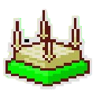
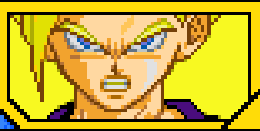